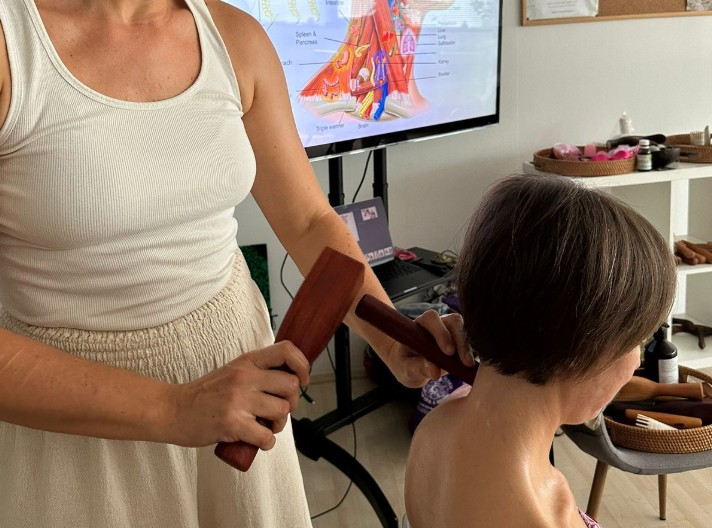
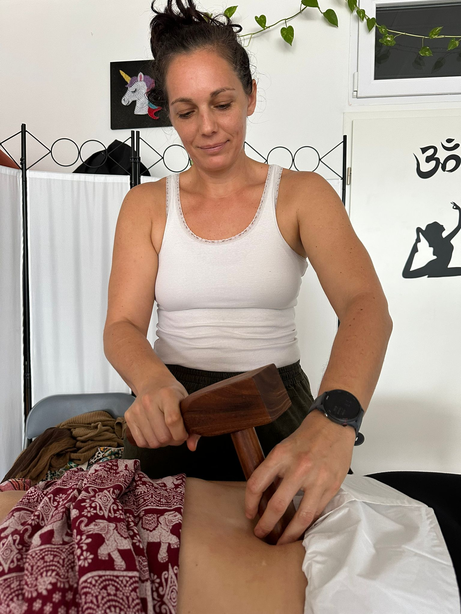
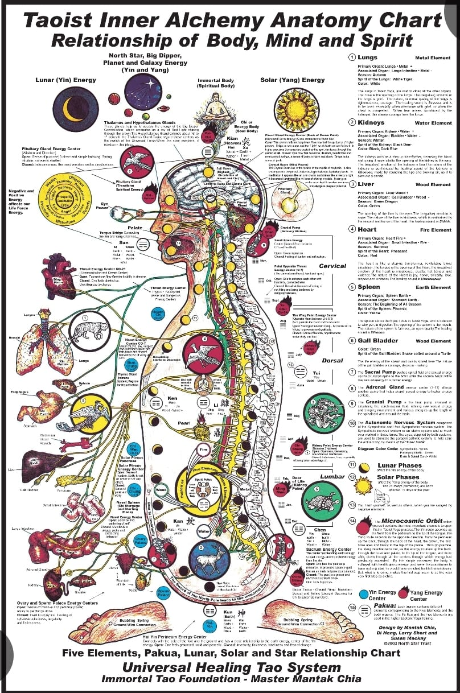

Terapija I
Tok Sen
Starodavna tehnika iz severne Tajske
Tok Sen združuje elemente tradicionalne tajske masaže, vibracijske terapije in energijskega ravnovesja. Terapevt s posebnim lesenim kladivcem in pripomočkom ustvarja ritmične vibracije in nežne udarce, ki prodirajo globoko v mišice, fascije in energijske poti — tja, kamor običajna masaža pogosto ne seže.
Zvok in vibracija ustvarjata posebno izkušnjo: telo se postopoma sprošča, um se umiri, živčni sistem pa preide v stanje globoke regeneracije.
- Globinsko sproščanje mišic in fascij
- Manj bolečin v hrbtu, vratu in ramenih
- Boljša gibljivost sklepov
- Spodbujen krvni in limfni obtok
- Sproščanje energijskih blokad
- Umirjanje živčnega sistema
- Boljša kakovost spanca
- Občutek lahkotnosti in prizemljenosti